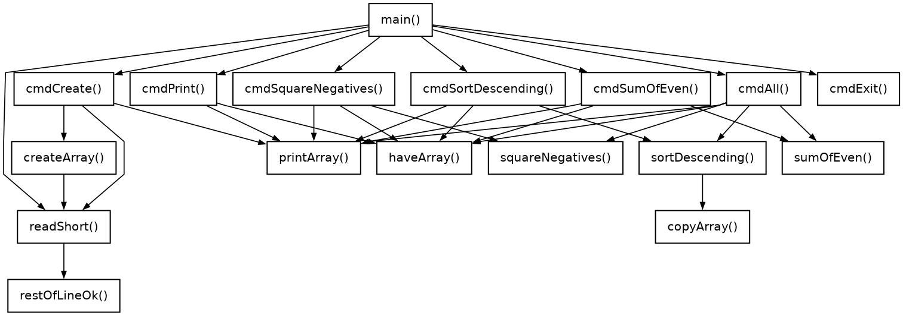

← До переліку лабораторних робіт
Лабораторна робота №8. Покажчики та посилання. Покажчики на функції
Варіант 19. Виконав: Одарчук Олексій, КНУ імені Тараса Шевченка, ФІТ, група ІПЗ-11. C++17, g++
1. Мета роботи
- Ознайомитися з особливостями посилальних типів даних.
- Опанувати технологію застосування посилальних типів даних.
- Навчитися розробляти алгоритми та програми із застосуванням посилальних типів даних.
2. Умова задачі
Розробити програму, команди меню якої передбачають такі дії (таблиця 8.1, варіант 19):
- створити одновимірний масив додатних та від'ємних чисел, задавши їх кількість з клавіатури;
- вивести створений масив на екран;
- виконати операції: замінити від'ємні числа їх квадратами; упорядкувати масив за спаданням; визначити суму парних чисел;
- вивести на екран усі перетворення вхідного масиву.
Обов'язкові вимоги до виконання
Невиконання пунктів 1-5 неприпустимо і призводить до штрафних санкцій у 50% зниження балів:
- програма повинна мати меню команд, виконання яких здійснювати через покажчики на функції;
- пам'ять під масив слід виділяти та звільняти динамічно з використанням покажчиків;
- передачу масивів у функції слід здійснювати через покажчики;
- функції мають повертати масиви через покажчики;
- доступ до елементів масивів здійснювати через покажчики.
Обмеження умови: забороняється використовувати STL, методи класів колекцій (сортування, пошуку та інші).
3. Аналіз задачі та теоретичне обґрунтування
Мова реалізації
Роботу виконано мовою C++, бо тема роботи - покажчики та посилання, а посилань (int &b = a;) у мові C немає.
Виконання обов'язкових вимог
| Вимога | Реалізація | Де в коді |
|---|---|---|
| 1. Меню через покажчики на функції |
Команди зібрано в масив структур MenuItem з полем-покажчиком на функцію
MenuAction action. Команда викликається через покажчик:
(g_menu + choice - 1)->action(), без switch чи ланцюжка
if.
|
using MenuAction = void (*)();, структура MenuItem, масив
g_menu[], виклик у main()
|
| 2. Динамічна пам'ять |
Масиви створюються оператором new[] (у createArray() -
new (std::nothrow) short[n], щоб за браку пам'яті повідомити про це, а
не завершитися аварійно) і звільняються оператором delete[]. Кожен
масив адресується покажчиком; попередній масив звільняється перед створенням нового,
а перед виходом з програми звільняється поточний.
|
createArray(), copyArray(), cmdCreate(),
кінець main()
|
| 3. Передача масивів через покажчики |
Функції обробки приймають масив параметром-покажчиком.
squareNegatives() приймає const short * (вхідний масив).
Функції copyArray(), printArray(),
sortDescending() і sumOfEven() записано шаблонами з
параметром const T *: той самий код працює і з вхідним масивом
short, і з масивом квадратів int.
const означає, що функція масив не змінює.
|
printArray(), squareNegatives(),
sortDescending(), sumOfEven(), copyArray()
|
| 4. Повернення масивів через покажчики |
Функції повертають покажчик на новий масив у динамічній пам'яті:
createArray() - short *, squareNegatives() -
int *, шаблони copyArray() і
sortDescending() - T * (масив того самого типу, що й
вихідний).
|
заголовки відповідних функцій |
| 5. Доступ до елементів через покажчики |
Елементи адресуються розіменуванням покажчика: *(a + i) або рухомим
покажчиком у циклі for (const T *p = a; p < a + n; ++p); у функціях
обробки масиву запису a[i] немає.
|
усі функції обробки |
Посилання поряд з покажчиками
Масиви передаються й повертаються лише через покажчики, як вимагають пункти 3-5. Для
скалярних значень, які функції повертають додатково (кількість замінених елементів,
обмінів, парних чисел), використано параметри-посилання виду
short &changed.
Так рекомендують і теоретичні відомості: "щоб повертати з функцій більше одного значення,
слід передати функції аргументи-посилання або аргументи-покажчики". Параметр-покажчик має
функція readShort(), тож у програмі є обидва способи:
| Параметр-покажчик | Параметр-посилання | |
|---|---|---|
| Оголошення | short *value |
short &changed |
| У виклику | readShort(..., &n, ...) - потрібна операція взяття адреси |
f(..., changed) - просто ім'я змінної |
| У тілі функції | std::cin >> *value - потрібне розіменування |
++changed - як зі звичайною змінною |
| Може бути нульовим | так - викличний код має передати дійсну адресу | ні, завжди зв'язане зі змінною |
| Де в програмі | readShort(), усі функції роботи з масивами |
squareNegatives(), sortDescending(),
sumOfEven()
|
Новий масив для кожного перетворення
Умова вимагає вивести всі перетворення вхідного масиву, тому
squareNegatives() і sortDescending() не змінюють вхідний масив,
а будують новий і повертають покажчик на нього. Викличний код звільняє цей масив після
виведення: кожному new[] відповідає один delete[].
Алгоритм упорядкування
Бібліотечні методи сортування заборонені, тому використано сортування вибором: серед
невпорядкованих елементів шукається найбільший і ставиться на початок невпорядкованої
частини. Трудомісткість - O(n²) порівнянь, не більше n-1
обмінів.
Визначення парності від'ємних чисел
Парність перевіряється умовою *p % 2 == 0, бо для від'ємного числа остача
від'ємна: (-3) % 2 дорівнює -1.
Обмеження діапазону введення
Значення елементів обмежено 1 000 за модулем, а кількість елементів - 2 000. Обидві межі
менші за 32 767, тому вхідний масив і кількість мають тип short. Після
піднесення від'ємних чисел до квадрата елемент сягає 1 000² = 10⁶ і в
short уже не вміщується, тому квадрати записуються в окремий масив
int. Сума парних чисел не перевищує 2 000 · 10⁶ = 2 · 10⁹ < 2,15 · 10⁹ і
теж вміщується в int. Межі MAX_ABS_VALUE і
MAX_COUNT однакові для введення з клавіатури і для генерації.
Кількість елементів обмежено числом 2 000, яке вміщується в short. Пам'ять
виділяється оператором new (std::nothrow) short[n], який за браку пам'яті
повертає nullptr замість аварійного завершення, і програма повідомляє про це.
Вибір типів даних
| Змінні | Тип | Чому |
|---|---|---|
елементи вхідного масиву g_array, межі генерації low,
high
|
short |
значення до ±1 000, у 16 біт вміщується |
кількість n, g_size, індекси i,
j, maxPos, пункт меню choice
|
short |
не більше 2 000 |
лічильники changed, swaps, count |
short |
не більші за кількість елементів (2 000) |
елементи масиву квадратів (результат squareNegatives()) |
int |
квадрат сягає 10⁶, а short - лише до 32 767 |
сума парних sum |
int |
сягає 2 · 10⁹; unsigned short і short замалі, а в
int вміщується
|
код символу c у restOfLineOk() |
int |
std::cin.peek() повертає int: код символу або окреме
значення кінця введення
|
Вхідний масив має тип short, а масив квадратів - int. Щоб не
писати копії функцій виведення, копіювання, сортування й суми для кожного типу, їх
записано шаблонами (template <typename T>) з параметром
const T *. Компілятор сам створює варіант для short і для
int, тож кожен масив займає стільки пам'яті, скільки потрібно його елементам.
Сума в sumOfEven() має тип int незалежно від T.
Контроль введення
Усі числа читає функція readShort() одразу в змінну типу short.
Число поза межами short (наприклад, -100000) потік не прочитає, і програма
повідомить про помилку так само, як про нечисловий текст. Після успішного читання
допоміжна функція restOfLineOk() перевіряє залишок рядка. Припустимі лише
пропуски до кінця рядка або початок наступного числа, тому елементи можна вводити як по
одному, так і кількома в одному рядку ("1 2 3" читається трьома послідовними запитами).
Сторонні символи після числа ("5abc", "3.7") вважаються помилкою: залишок рядка
відкидається і запит повторюється. Перевірка відсутності масиву перед операціями зібрана у
функції haveArray(), яка виводить повідомлення й повертає результат
перевірки.
Література: Ковалюк Т.В. Алгоритмізація та програмування. - Львів.: "Магнолія 2006", 2024. - 400 с.; Deitel P., Deitel H. C++ How to Program. Pearson Education, Inc. Hoboken, New Jersey. 2017. - 3015 p.
4. Блок-схема алгоритму


HIPO-діаграма показує ієрархію викликів функцій: зверху головна функція main(), стрілки ведуть до функцій, які вона викликає, нижче - функції, що викликаються з них; петля біля функції означає рекурсивний виклик. Діаграму побудовано за текстом програми.

Схеми побудовано за текстами програм у rombik (rombik.app) відповідно до ДСТУ 19.701-90 (ISO 5807). Структура кожної схеми точно відповідає коду функції, а блоки описують дії словами, як у методичних вказівках, без фрагментів коду.
5. Текст програми
task1.cpp
/*==============================================================================
task1.cpp. Лабораторна робота №8. Варіант 19.
Тема: покажчики та посилання. Покажчики на функції.
Умова (таблиця 8.1, варіант 19): розробити програму, команди меню якої
передбачають такі дії:
- створити одновимірний масив додатних та від'ємних чисел, задавши їх
кількість з клавіатури;
- вивести створений масив на екран;
- виконати такі операції:
замінити від'ємні числа їх квадратами;
упорядкувати масив за спаданням;
визначити суму парних чисел;
- вивести на екран усі перетворення вхідного масиву.
ОБОВ'ЯЗКОВІ ВИМОГИ ДО ВИКОНАННЯ (невиконання - штраф 50% балів):
1. Програма повинна мати меню команд, виконання яких здійснювати через
покажчики на функції.
2. Пам'ять під масив слід виділяти та звільняти динамічно з використанням
покажчиків.
3. Передачу масивів у функції слід здійснювати через покажчики.
4. Функції мають повертати масиви через покажчики.
5. Доступ до елементів масивів здійснювати через покажчики.
Реалізація вимог:
1. Команди меню зібрано в масив структур MenuItem, кожна з яких містить
поле-покажчик на функцію. Команда викликається через покажчик:
(g_menu + choice - 1)->action() - жодного switch чи ланцюжка if для
вибору команди немає.
2. Масиви створюються оператором new[] і звільняються оператором
delete[]; кожен масив адресується покажчиком.
3. Усі функції обробки приймають масив параметром-покажчиком
(short * / const short * для вхідного масиву, int * для масиву
квадратів; спільні функції записано шаблонами з параметром-покажчиком
const T *).
4. Функції createArray(), copyArray(), squareNegatives() і sortDescending()
повертають покажчик на новий масив.
5. Звертання до елементів виконується через розіменування покажчика
з адресною арифметикою: *(a + i) або рухомий покажчик *p, а не a[i].
Посилання: скалярні результати функцій (кількості замінених елементів,
обмінів, парних чисел) повертаються через параметри-посилання виду short &,
а функція readShort() повертає число через параметр-покажчик.
Типи даних обрано за доведеним діапазоном значень:
short - елементи вхідного масиву (до ±1000), кількість елементів (до 2000),
індекси, межі генерації, пункти меню, лічильники замін, обмінів
і парних чисел (не більше 2000) - усе вміщується в 16 біт;
int - елементи масиву квадратів (до 10^6), сума парних чисел
(до 2 * 10^9) та код символу, повернутий std::cin.peek().
ОБМЕЖЕННЯ УМОВИ: забороняється використовувати STL, методи класів колекцій
(сортування, пошуку та інші).
Виконав: Одарчук Олексій, КНУ імені Тараса Шевченка, ФІТ, група ІПЗ-11.
Компілятор: g++ -std=c++17
==============================================================================*/
#include <iostream>
#include <limits>
#include <cstdio>
#include <climits>
#include <new>
#include <cstdlib>
#include <ctime>
/* Найбільше за модулем значення елемента і найбільша кількість елементів.
Обидві межі менші за 32 767, тому елементи вхідного масиву, кількість
елементів та індекси зберігаються в short.
Після піднесення від'ємних чисел до квадрата елемент сягає 1000^2 = 10^6 -
це вже не short, тому квадрати записуються в окремий масив типу int.
Сума парних чисел не перевищує 2000 * 10^6 = 2 * 10^9, що менше за межу int
2 147 483 647, тому сума має тип int.
Межі застосовуються однаково до введення з клавіатури та до генерації
псевдовипадкових чисел. */
const short MAX_ABS_VALUE = 1000; //найбільший модуль елемента
const short MAX_COUNT = 2000; //найбільша кількість елементів
/*==============================================================================
Функції введення
==============================================================================*/
//==== restOfLineOk: перевірити, що після щойно прочитаного числа в рядку введення =====
/*
restOfLineOk - перевірити, що після щойно прочитаного числа в рядку введення
немає стороннього тексту.
Пропуски й табуляції після числа пропускаються. Далі припустимі: кінець
рядка (він поглинається), кінець вхідних даних або початок наступного числа
(цифра, знак '-' чи '+'), який лишається в потоці, тож рядок "1 2 3"
читається трьома послідовними викликами readShort(). Будь-який інший символ
("5abc", "3.7") означає помилку: залишок рядка відкидається.
Повертає: true - за числом нічого зайвого; false - виявлено сторонній текст.
Локальні змінні:
c - код наступного символу в потоці (без вилучення); має тип int, бо
peek() повертає або код символу, або окреме значення EOF.
*/
bool restOfLineOk()
{
int c = std::cin.peek(); //переглянути наступний символ
while (c == ' ' || c == '\t' || c == '\r') //пропускати пробіли й табуляції
{
std::cin.get(); //вилучити пробільний символ
c = std::cin.peek(); //переглянути наступний символ
}
if (c == std::char_traits<char>::eof()) //якщо досягнуто кінця введення
{
return true; //повернути ознаку коректності
}
if (c == '\n') //якщо досягнуто кінця рядка
{
std::cin.get(); //вилучити символ кінця рядка
return true; //повернути ознаку коректності
}
if ((c >= '0' && c <= '9') || c == '-' || c == '+') //якщо далі починається число
{
return true; //повернути ознаку коректності
}
//відкинути залишок рядка
std::cin.ignore(std::numeric_limits<std::streamsize>::max(), '\n');
return false; //повернути ознаку помилки
}
//==== readShort: прочитати ціле число із заданого діапазону з контролем введення =====
/*
readShort - прочитати ціле число із заданого діапазону з контролем введення.
Усі числа, які вводить користувач (кількість елементів до 2000, елементи
до ±1000, межі генерації, номери пунктів меню), вміщуються в short, тому
число читається одразу в змінну типу short. Число поза межами short
(наприклад, -100000) потік не прочитає і повідомить про помилку так само,
як і про нечисловий текст.
Параметри:
prompt [вхідний] - текст запрошення;
value [вихідний] - ПОКАЖЧИК на змінну, куди записується число;
low, high [вхідні] - межі припустимого діапазону.
Повертає : true - число прочитано; false - вхідні дані вичерпано.
Локальні змінні:
isNumber - чи вдалося прочитати ціле число;
isClean - чи немає після числа стороннього тексту (див. restOfLineOk).
*/
bool readShort(const char *prompt, short *value, short low, short high)
{
for (;;) //повторювати до коректного введення
{
std::cout << prompt; //вивести запрошення
std::cin >> *value; //увести число
if (std::cin.fail() && std::cin.eof()) //якщо вхідні дані вичерпано
{
return false; //повернути ознаку вичерпання
}
const bool isNumber = !std::cin.fail(); //ознака успішного читання числа
bool isClean = false; //ознака відсутності зайвого тексту
if (isNumber) //якщо число прочитано
{
isClean = restOfLineOk(); //перевірити залишок рядка
}
else //якщо введено не число
{
std::cin.clear(); //скинути стан помилки потоку
//відкинути хибний рядок
std::cin.ignore(std::numeric_limits<std::streamsize>::max(), '\n');
}
//якщо число коректне й у межах
if (isNumber && isClean && *value >= low && *value <= high)
{
return true; //повернути ознаку успіху
}
std::cout << "Помилка: потрібне ціле число від " << low << " до " << high
<< ".\n"; //вивести повідомлення про помилку
}
}
/*==============================================================================
Функції обробки масивів.
Усі приймають масив через покажчик і повертають новий масив через покажчик.
==============================================================================*/
//========= createArray: створити масив у динамічній пам'яті та заповнити його =========
/*
createArray - створити масив у динамічній пам'яті та заповнити його.
Параметри:
n [вхідний] - кількість елементів;
byHand [вхідний] - true: введення з клавіатури; false: генерація;
low, high [вхідні] - межі діапазону для генерації.
Повертає: покажчик на створений масив або nullptr, якщо введення перервано
чи пам'яті не вистачило.
Пам'ять виділяється оператором new[]; звільняти її має викличний код.
Локальні змінні:
array - покажчик на початок виділеної ділянки пам'яті;
p - рухомий покажчик для заповнення елементів;
prompt - текст запрошення для елемента.
*/
short *createArray(short n, bool byHand, short low, short high)
{
/* Кількість елементів вводить користувач, тому виділення пам'яті може
не вдатися: new (std::nothrow) повертає nullptr замість винятку. */
short *const array = new (std::nothrow) short[n]; //виділити пам'ять під масив
if (array == nullptr) //якщо пам'ять не виділено
{
//повідомити про нестачу пам'яті
std::cout << "Недостатньо пам'яті для масиву з " << n << " елементів.\n";
return nullptr; //повернути нульовий покажчик
}
if (byHand) //якщо введення з клавіатури
{
//вивести запрошення до введення
std::cout << "Уведіть цілі числа від " << -MAX_ABS_VALUE << " до "
<< MAX_ABS_VALUE << " (усього " << n << "):\n";
for (short *p = array; p < array + n; ++p) //перебрати елементи масиву
{
char prompt[13]; //запрошення: найдовше " a[1999] = " - 12 байтів
//сформувати запрошення з індексом
std::snprintf(prompt, sizeof prompt,
" a[%hd] = ", static_cast<short>(p - array));
//якщо введення перервано
if (!readShort(prompt, p, -MAX_ABS_VALUE, MAX_ABS_VALUE))
{
delete[] array; //звільнити пам'ять при перериванні
return nullptr; //повернути нульовий покажчик
}
}
}
else //інакше згенерувати числа
{
/* ширина діапазону не більше 2 * MAX_ABS_VALUE + 1 = 2001, тож rand()
(від 0 до 32767) охоплює всі значення */
for (short *p = array; p < array + n; ++p) //перебрати елементи масиву
{
//число від low до high
*p = static_cast<short>(low + std::rand() % (high - low + 1));
}
}
return array; //повернути створений масив
}
//======== copyArray: створити копію масиву в новій ділянці динамічної пам'яті =========
/*
copyArray - створити копію масиву в новій ділянці динамічної пам'яті.
Шаблон: T - тип елементів (short для вхідного масиву, int для масиву
квадратів), тож копія займає стільки ж пам'яті, скільки оригінал.
Параметри:
source [вхідний] - покажчик на вихідний масив;
n [вхідний] - кількість елементів.
Повертає : покажчик на новий масив-копію.
*/
template <typename T> T *copyArray(const T *source, short n)
{
T *const result = new T[n]; //виділити пам'ять під копію
for (short i = 0; i < n; ++i) //перебрати елементи масиву
{
*(result + i) = *(source + i); //скопіювати елемент
}
return result; //повернути масив-копію
}
//================= printArray: вивести масив на екран через покажчик ==================
/*
printArray - вивести масив на екран через покажчик.
Шаблон: T - тип елементів (short або int).
Параметри:
title [вхідний] - заголовок;
a [вхідний] - покажчик на масив;
n [вхідний] - кількість елементів.
*/
template <typename T> void printArray(const char *title, const T *a, short n)
{
std::cout << title; //вивести заголовок
for (const T *p = a; p < a + n; ++p) //перебрати елементи масиву
{
std::cout << ' ' << *p; //вивести елемент
}
std::cout << '\n'; //перейти на новий рядок
}
//====== squareNegatives: побудувати новий масив, у якому від'ємні числа замінено ======
/*
squareNegatives - побудувати новий масив, у якому від'ємні числа замінено
їх квадратами.
Вихідний масив не змінюється: умова вимагає вивести УСІ перетворення
вхідного масиву, тому кожне перетворення утворює окремий масив.
Параметри:
source [вхідний] - покажчик на вихідний масив;
n [вхідний] - кількість елементів;
changed [вихідний] - ПОСИЛАННЯ на лічильник замінених елементів.
Масив повертається через покажчик (цього вимагає умова), а окреме скалярне
значення - кількість замінених елементів - повертається через параметр-
посилання. Посилання є альтернативним іменем змінної викличного коду, тому
всередині функції з ним працюють як зі звичайною змінною: без операції
розіменування та без ризику отримати неініціалізовану адресу.
Вихідний масив має тип short (елементи до ±1000), а масив-результат - int:
квадрат сягає 1000^2 = 10^6 і в short (до 32 767) не вміщується. Добуток
value * value обчислюється в int, бо операнди short перед множенням
перетворюються на int.
Кількість замін не більша за кількість елементів (до 2000) - тип short.
Локальні змінні:
result - покажчик на новий масив;
value - поточний елемент вихідного масиву.
*/
int *squareNegatives(const short *source, short n, short &changed)
{
int *const result = new int[n]; //виділити пам'ять під результат
changed = 0; //обнулити лічильник замін
for (short i = 0; i < n; ++i) //перебрати елементи масиву
{
const short value = *(source + i); //поточний елемент масиву
if (value < 0) //якщо елемент від'ємний
{
*(result + i) = value * value; //записати квадрат елемента
++changed; //збільшити лічильник замін
}
else //інакше залишити елемент
{
*(result + i) = value; //скопіювати елемент без змін
}
}
return result; //повернути новий масив
}
//========= sortDescending: побудувати новий масив, упорядкований за спаданням =========
/*
sortDescending - побудувати новий масив, упорядкований за спаданням.
Використано сортування вибором: на кожному кроці серед елементів, що
лишилися невпорядкованими, знаходиться найбільший і переставляється на
початок невпорядкованої частини. Бібліотечні методи сортування заборонені
умовою, тому алгоритм реалізовано власними засобами.
Шаблон: T - тип елементів. Функція впорядковує і вхідний масив (short),
і масив квадратів (int), не збільшуючи розмір елементів.
Кількість обмінів менша за кількість елементів (до 2000) - тип short.
Параметри:
source [вхідний] - покажчик на вихідний масив;
n [вхідний] - кількість елементів;
swaps [вихідний] - ПОСИЛАННЯ на лічильник обмінів.
Повертає : покажчик на новий упорядкований масив.
Локальні змінні:
result - покажчик на новий масив;
maxPos - індекс найбільшого елемента невпорядкованої частини;
temp - проміжне значення для обміну.
*/
template <typename T> T *sortDescending(const T *source, short n, short &swaps)
{
T *const result = copyArray(source, n); //створити копію вихідного масиву
swaps = 0; //обнулити лічильник обмінів
for (short i = 0; i < n - 1; ++i) //перебрати невпорядковану частину
{
short maxPos = i; //індекс найбільшого елемента
for (short j = i + 1; j < n; ++j) //перебрати решту елементів
{
if (*(result + j) > *(result + maxPos)) //якщо знайдено більший елемент
{
maxPos = j; //запам'ятати його індекс
}
}
if (maxPos != i) //якщо найбільший не на місці
{
const T temp = *(result + i); //допоміжна змінна для обміну
*(result + i) = *(result + maxPos); //перенести найбільший на початок
*(result + maxPos) = temp; //завершити обмін елементів
++swaps; //збільшити лічильник обмінів
}
}
return result; //повернути впорядкований масив
}
//======================== sumOfEven: сума парних чисел масиву =========================
/*
sumOfEven - сума парних чисел масиву.
Парність визначається за остачею від ділення на 2. Для від'ємних чисел
операція % у мові C++ може дати остачу -1, тому перевіряється рівність
остачі нулю, а не одиниці - цей запис однаково правильний для обох знаків.
Шаблон: T - тип елементів (short для вхідного масиву, int для масиву
квадратів). Сума має тип int незалежно від T: для масиву квадратів вона
сягає 2000 * 10^6 = 2 * 10^9, що вміщується в int. Кількість парних чисел
не більша за кількість елементів (до 2000) - тип short.
Параметри:
a [вхідний] - покажчик на масив;
n [вхідний] - кількість елементів;
count [вихідний] - ПОСИЛАННЯ на лічильник парних чисел.
Повертає : сума парних чисел.
Локальні змінні:
sum - сума парних чисел;
p - рухомий покажчик для перебору елементів.
Функція повертає ДВА значення: суму - як результат, кількість - через
параметр-посилання. Це і є те застосування посилальних типів, про яке
йдеться в теоретичних відомостях: "щоб повертати з функцій більше одного
значення, слід передати функції аргументи-посилання або аргументи-покажчики".
*/
template <typename T> int sumOfEven(const T *a, short n, short &count)
{
int sum = 0; //сума парних чисел
count = 0; //обнулити лічильник парних
for (const T *p = a; p < a + n; ++p) //перебрати елементи масиву
{
if (*p % 2 == 0) //якщо елемент парний
{
sum += *p; //накопичити суму
++count; //збільшити лічильник парних
}
}
return sum; //повернути суму
}
/*==============================================================================
Стан програми та команди меню.
Кожна команда має однаковий заголовок, що дозволяє зберігати покажчики на
них в одному масиві та викликати за індексом - це і є диспетчеризація
через покажчики на функції.
==============================================================================*/
/* Поточний масив та його довжина. Оголошені глобально, щоб усі команди меню
мали однаковий заголовок і могли зберігатися в спільному масиві покажчиків
на функції. */
short *g_array = nullptr; //покажчик на поточний масив (елементи до ±1000)
short g_size = 0; //кількість елементів масиву (до 2000)
//============================== cmdCreate: команда меню ===============================
/*
cmdCreate - команда меню: створити масив.
Параметри: немає. Змінює глобальний стан g_array, g_size.
Локальні змінні:
prompt - текст запрошення (найдовше - 79 байтів у UTF-8);
n - кількість елементів масиву;
choice - обраний спосіб створення;
low, high - межі генерації;
created - покажчик на створений масив.
*/
void cmdCreate()
{
char prompt[80]; //текст запрошення: до 79 байтів і завершальний нуль
short n = 0; //кількість елементів масиву
//сформувати запрошення
std::snprintf(prompt, sizeof prompt,
"Уведіть кількість елементів масиву (1..%hd): ", MAX_COUNT);
if (!readShort(prompt, &n, 1, MAX_COUNT)) //увести кількість елементів
{
return; //перервати команду
}
std::cout << "Спосіб створення:\n"
" 1 - введення з клавіатури\n"
" 2 - генерація псевдовипадкових чисел\n"; //вивести способи створення
short choice = 0; //обраний спосіб створення
if (!readShort("Оберіть спосіб (1..2): ", &choice, 1, 2)) //увести спосіб створення
{
return; //перервати команду
}
short low = -MAX_ABS_VALUE; //нижня межа генерації
short high = MAX_ABS_VALUE; //верхня межа генерації
if (choice == 2) //якщо обрано генерацію
{
//сформувати запрошення
std::snprintf(prompt, sizeof prompt,
"Уведіть нижню межу (від'ємну, не менше %hd): ",
static_cast<short>(-MAX_ABS_VALUE));
if (!readShort(prompt, &low, -MAX_ABS_VALUE, 0)) //увести нижню межу
{
return; //перервати команду
}
//сформувати запрошення
std::snprintf(prompt, sizeof prompt,
"Уведіть верхню межу (додатну, не більше %hd): ", MAX_ABS_VALUE);
if (!readShort(prompt, &high, 1, MAX_ABS_VALUE)) //увести верхню межу
{
return; //перервати команду
}
}
short *const created = createArray(n, choice == 1, low, high); //створити масив
if (created == nullptr) //якщо масив не створено
{
return; //перервати команду
}
delete[] g_array; //звільнити попередній масив
g_array = created; //запам'ятати новий масив
g_size = n; //запам'ятати кількість елементів
std::cout << "\nМасив створено.\n"; //повідомити про створення масиву
printArray("Вхідний масив:", g_array, g_size); //вивести вхідний масив
}
//================= haveArray: перевірити, чи створено масив; якщо ні ==================
/*
haveArray - перевірити, чи створено масив; якщо ні - повідомити користувача.
Повертає: true - масив існує; false - g_array нульовий, повідомлення виведено.
*/
bool haveArray()
{
if (g_array == nullptr) //якщо масив не створено
{
//повідомити користувача
std::cout << "Масив ще не створено. Скористайтеся командою 1.\n";
return false; //повернути ознаку відсутності
}
return true; //повернути ознаку наявності
}
//=============================== cmdPrint: команда меню ===============================
/*
cmdPrint - команда меню: вивести поточний масив.
*/
void cmdPrint()
{
if (!haveArray()) //якщо масив не створено
{
return; //перервати команду
}
printArray("Вхідний масив:", g_array, g_size); //вивести вхідний масив
}
//========================== cmdSquareNegatives: команда меню ==========================
/*
cmdSquareNegatives - команда меню: замінити від'ємні числа їх квадратами.
*/
void cmdSquareNegatives()
{
if (!haveArray()) //якщо масив не створено
{
return; //перервати команду
}
short changed = 0; //кількість замінених елементів
//замінити від'ємні квадратами
int *const result = squareNegatives(g_array, g_size, changed);
//вивести вхідний масив
printArray("Вхідний масив: ", g_array, g_size);
//вивести перетворений масив
printArray("Від'ємні замінено їх квадратами: ", result, g_size);
std::cout << "Замінено елементів: " << changed << '\n'; //вивести кількість замін
delete[] result; //тимчасовий масив більше не потрібен
}
//========================== cmdSortDescending: команда меню ===========================
/*
cmdSortDescending - команда меню: упорядкувати масив за спаданням.
*/
void cmdSortDescending()
{
if (!haveArray()) //якщо масив не створено
{
return; //перервати команду
}
short swaps = 0; //кількість обмінів
//упорядкувати масив за спаданням
short *const result = sortDescending(g_array, g_size, swaps);
printArray("Вхідний масив: ", g_array, g_size); //вивести вхідний масив
//вивести впорядкований масив
printArray("Упорядковано за спаданням:", result, g_size);
std::cout << "Виконано обмінів: " << swaps << '\n'; //вивести кількість обмінів
delete[] result; //звільнити тимчасовий масив
}
//============================= cmdSumOfEven: команда меню =============================
/*
cmdSumOfEven - команда меню: визначити суму парних чисел.
*/
void cmdSumOfEven()
{
if (!haveArray()) //якщо масив не створено
{
return; //перервати команду
}
short count = 0; //кількість парних чисел
const int sum = sumOfEven(g_array, g_size, count); //обчислити суму парних чисел
printArray("Вхідний масив:", g_array, g_size); //вивести вхідний масив
std::cout << "Парних чисел: " << count << '\n'; //вивести кількість парних
std::cout << "Сума парних чисел: " << sum << '\n'; //вивести суму парних
if (count == 0) //якщо парних чисел немає
{
//пояснити нульову суму
std::cout << "Парних чисел у масиві немає, тому сума дорівнює нулю.\n";
}
}
//================================ cmdAll: команда меню ================================
/*
cmdAll - команда меню: виконати всі перетворення послідовно й вивести їх.
Відповідає вимозі умови "вивести на екран усі перетворення
вхідного масиву".
*/
void cmdAll()
{
if (!haveArray()) //якщо масив не створено
{
return; //перервати команду
}
short changed = 0; //кількість замінених елементів
short swaps = 0; //кількість обмінів
short count = 0; //кількість парних чисел
//замінити від'ємні квадратами
int *const squared = squareNegatives(g_array, g_size, changed);
//упорядкувати за спаданням
int *const sorted = sortDescending(squared, g_size, swaps);
const int sum = sumOfEven(sorted, g_size, count); //обчислити суму парних
std::cout << "\nУсі перетворення вхідного масиву\n"; //вивести заголовок
//вивести вхідний масив
printArray(" 1. Вхідний масив: ", g_array, g_size);
//вивести масив квадратів
printArray(" 2. Від'ємні замінено їх квадратами: ", squared, g_size);
//вивести впорядкований масив
printArray(" 3. Упорядковано за спаданням: ", sorted, g_size);
std::cout << " 4. Сума парних чисел упорядкованого масиву: " << sum
<< " (парних чисел: " << count << ")\n"; //вивести суму парних
//вивести кількість замін і обмінів
std::cout << "\n Замінено від'ємних: " << changed
<< ", обмінів під час сортування: " << swaps << '\n';
delete[] sorted; //звільнити впорядкований масив
delete[] squared; //звільнити масив квадратів
}
//=============================== cmdExit: команда меню ================================
/*
cmdExit - команда меню: завершення роботи. Тіло порожнє: саме завершення
виконує головний цикл, а команда потрібна для однорідності меню.
*/
void cmdExit()
{
}
/*==============================================================================
Опис меню: назва пункту та ПОКАЖЧИК НА ФУНКЦІЮ, що його виконує.
==============================================================================*/
/* Тип "покажчик на функцію без параметрів, яка не повертає значення". */
using MenuAction = void (*)(); //тип покажчика на команду
/* Пункт меню: текст і покажчик на функцію-обробник. */
struct MenuItem
{
const char *title; //назва пункту меню
MenuAction action; //покажчик на функцію-обробник
};
/* Таблиця команд. Потрібний пункт знаходиться зсувом покажчика на початок
таблиці, без операторів switch чи ланцюжків if. */
const MenuItem g_menu[] = {
{"створити масив", cmdCreate},
{"вивести масив", cmdPrint},
{"замінити від'ємні числа їх квадратами", cmdSquareNegatives},
{"упорядкувати масив за спаданням", cmdSortDescending},
{"визначити суму парних чисел", cmdSumOfEven},
{"виконати та вивести всі перетворення", cmdAll},
{"вихід", cmdExit}}; //таблиця команд меню
//кількість пунктів меню
const short MENU_SIZE = static_cast<short>(sizeof g_menu / sizeof g_menu[0]);
//================================ головна функція main ================================
/*
Головна функція. Відображає меню та викликає обрану команду через
покажчик на функцію.
Локальні змінні:
prompt - текст запрошення (38 байтів у UTF-8 і завершальний нуль);
i - номер пункту меню під час виведення;
choice - номер обраного пункту меню.
*/
int main()
{
std::cout << "Лабораторна робота №8 (варіант 19)\n"; //вивести назву роботи
//вивести відомості про автора
std::cout << "Виконав: студент групи ІПЗ-11 Одарчук Олексій\n";
std::cout << "Обробка одновимірного масиву\n"; //вивести тему
/* Генератор псевдовипадкових чисел ініціалізується один раз на весь
сеанс роботи програми. */
//ініціалізувати генератор чисел
std::srand(static_cast<unsigned>(std::time(nullptr)));
char prompt[39]; //текст запрошення: 38 байтів і завершальний нуль
//сформувати запрошення
std::snprintf(prompt, sizeof prompt, "Оберіть команду (1..%hd): ", MENU_SIZE);
for (;;) //повторювати до виходу
{
//вивести роздільник
std::cout << "\n============================================================\n";
std::cout << "Меню команд:\n"; //вивести заголовок меню
for (short i = 0; i < MENU_SIZE; ++i) //перебрати пункти меню
{
//вивести пункт меню
std::cout << " " << i + 1 << " - " << (g_menu + i)->title << '\n';
}
short choice = 0; //номер обраного пункту
if (!readShort(prompt, &choice, 1, MENU_SIZE)) //увести номер команди
{
//повідомити про завершення
std::cout << "\nВхідні дані вичерпано. Завершення роботи.\n";
break; //перервати цикл меню
}
std::cout << '\n'; //перейти на новий рядок
/* Виклик команди через покажчик на функцію. */
(g_menu + choice - 1)->action(); //виконати обрану команду
if ((g_menu + choice - 1)->action == cmdExit) //якщо обрано вихід
{
std::cout << "Завершення роботи.\n"; //повідомити про завершення
break; //перервати цикл меню
}
}
/* Звільнення динамічної пам'яті перед виходом. */
delete[] g_array; //звільнити пам'ять масиву
g_array = nullptr; //обнулити покажчик
return 0; //завершити програму
}
6. Результати виконання роботи
Компіляція: make (g++ -std=c++17, прапорці
-Wall -Wextra -pedantic -O2). Попереджень компілятора немає.
Нижче наведено екранні копії повних прогонів програм: кожна починається з запуску програми, містить усе введення з клавіатури й увесь вивід до завершення роботи. Прогін, що не вміщується на один екран, подано кількома послідовними частинами. Протоколи всіх прогонів, зокрема додаткових наборів вхідних даних, винесено окремими файлами за посиланнями.


Повний протокол виконання (task1.txt) (повний протокол, 442 рядків)
7. Аналіз достовірності результатів
Достовірність результатів перевірено ручним розрахунком перетворень масиву, обчисленням на калькуляторі та інструментальною перевіркою роботи з динамічною пам'яттю. Для кожної контрольної величини поруч із розрахунком наведено результат програми.
Перевірка розрахунків на калькуляторі
Нижче наведено екранні копії обчислень у калькуляторі WolframAlpha; поруч із кожною - результат програми.

Калькулятор: 50; програма: 50. Значення збігаються.
Перевірка перетворень ручним розрахунком
Вхідний масив: 5, -3, 8, -6, 7, 2, -1, 4.
| Крок | Ручний розрахунок | Результат програми |
|---|---|---|
| Заміна від'ємних квадратами | (-3)² = 9, (-6)² = 36, (-1)² = 1 -> 5, 9, 8, 36, 7, 2, 1, 4; замінено 3 елементи | 5 9 8 36 7 2 1 4, замінено 3 |
| Упорядкування за спаданням | 36, 9, 8, 7, 5, 4, 2, 1 | 36 9 8 7 5 4 2 1 |
| Сума парних чисел | парні: 36, 8, 4, 2 -> 36 + 8 + 4 + 2 = 50, парних чисел 4 | 50, парних чисел 4 |
Усі три перетворення збігаються з ручним розрахунком.
Команда "визначити суму парних чисел" працює з вхідним масивом (парні 8, -6, 2, 4, сума 8), а "виконати та вивести всі перетворення" - з перетвореним (парні 36, 8, 4, 2, сума 50).
Перевірка граничних випадків
| Випадок | Очікувана поведінка | Результат програми |
|---|---|---|
| Масив без парних чисел (1, 3, -5, 7) | Сума дорівнює 0, потрібне окреме повідомлення | Сума парних чисел: 0, виведено "Парних чисел у масиві немає, тому сума дорівнює нулю" |
| Виклик операції до створення масиву | Повідомлення замість звертання за нульовим покажчиком | "Масив ще не створено. Скористайтеся командою 1." |
| Вибір неіснуючого пункту меню | Повторний запит без аварійного завершення | "Помилка: потрібне ціле число від 1 до 7" |
| Повторне створення масиву | Попередній масив звільняється, витоку немає | підтверджено перевіркою пам'яті (нижче) |
Перевірка межі значень елементів
| Введене значення | Очікувана поведінка | Результат програми |
|---|---|---|
| -1 000 (найменше допустиме) | приймається; квадрат 1 000 000 вміщується в int | приймається, квадрат 1000000 |
| 1 000 (найбільше допустиме) | приймається | приймається |
| -100 000 (поза межами) | відхиляється на введенні | "Помилка: потрібне ціле число від -1000 до 1000" |
| 2 000 елементів по -1 000 (найбільша сума) | сума парних 2 000 000 000 вміщується в int | сума 2000000000 |
| 2 001 елемент | відхиляється на введенні | "Помилка: потрібне ціле число від 1 до 2000" |
Граничні значення перевірено також засобом UndefinedBehaviorSanitizer:
знакового переповнення немає.
Перевірка коректності роботи з динамічною пам'яттю
Роботу з динамічною пам'яттю перевірено засобами діагностики
AddressSanitizer та UndefinedBehaviorSanitizer:
g++ -std=c++17 -Wall -Wextra -g -fsanitize=address,undefined -o task1 task1.cpp ASAN_OPTIONS=detect_leaks=1 ./task1
На повному сценарії (створення масиву, усі перетворення, повторні операції, вихід) діагностика не виявила витоків пам'яті, виходів за межі масивів, повторного звільнення чи невизначеної поведінки.
8. Висновки
- Реалізовано меню команд, що викликаються через покажчики на функції.
- Масиви створюються й звільняються динамічно, передаються у функції та повертаються з них через покажчики, доступ до елементів - через розіменування покажчиків.
- Скалярні результати функцій повертаються через параметри-посилання; у програмі показано обидва способи - посилання і покажчик.
- Роботу з пам'яттю перевірено засобами AddressSanitizer і UndefinedBehaviorSanitizer: помилок не виявлено.
- Завдання варіанта виконано в повному обсязі.